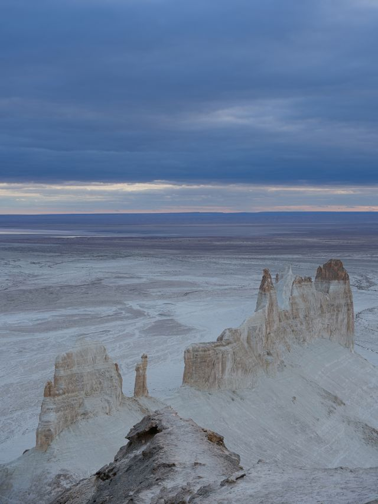

Görsel iletişim tasarımının kavram, kuram ve tekniğini; tasarım kültüründen beslenerek yaratıcı düşüncenin bakış açısı ile becerilerini özgün bir şekilde ortaya koyabilecek, düşünsel, sanatsal ve teknik bilgiye sahip tasarımcılar yetiştirmektir.
Görsel İletişim Tasarım Lisans Programı ile, alanında mesleği ile ilgili teknik bilgi ve beceriye sahip, bilişim, tasarım ve iletişim araçlarını kullanabilen, araştıran, kendini sürekli yenileyen, özgün fikir ve yaratıcı tasarımlar ortaya koyabilen, nitelikli insan kaynağının yetiştirilmesi amaçlanmaktadır
düzce üniversitei